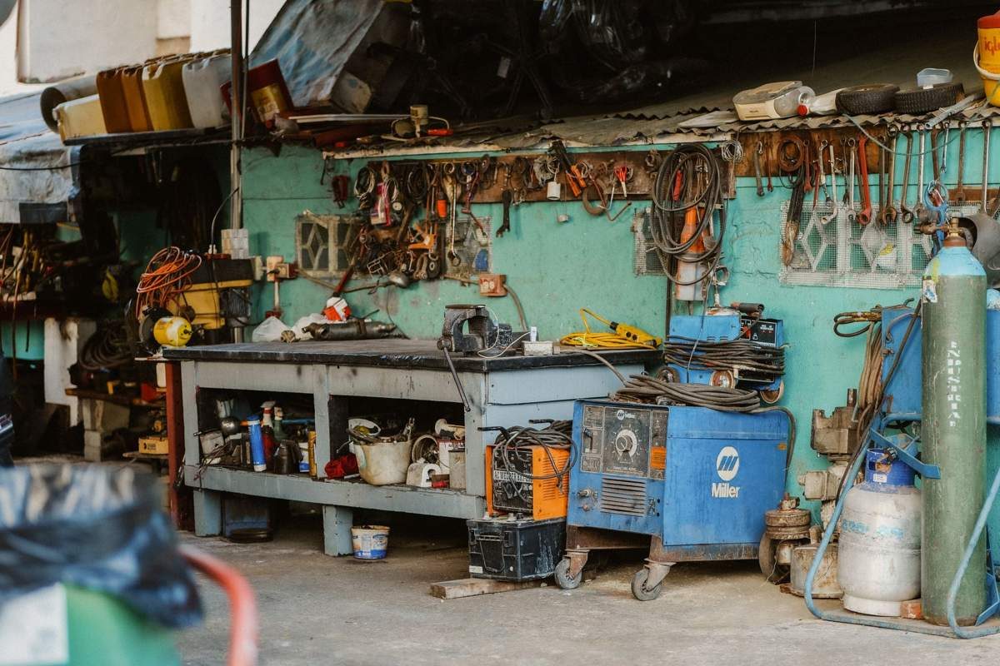

The boxes are the easy part of a garage. What stops most people is the fixed stuff: steel shelving lagged into the studs, an overhead rack screwed into the ceiling joists, and a workbench that was built in place and will never fit through the door in one piece. All of it comes out, but it comes out in a different order than the clutter.

Plan for the wall to need patching afterward. That surprises people more than the work does.
What counts as fixed, and why it changes the job
Loose items get carried. Fixed items get taken apart first, and that is the whole difference.
The list in a typical North Texas garage is short and it repeats. Steel or wire shelving units anchored to the studs. Overhead ceiling racks hanging from the joists, usually loaded with holiday bins nobody has opened. A workbench, either a big-box unit or one somebody framed out of two-by-fours and never intended to move. Upper cabinets, often the kitchen cabinets from a remodel, screwed straight into drywall. Pegboard and slatwall. A utility sink. A second refrigerator or a chest freezer, which is technically not fixed but behaves like it once you see where it sits.
Everything on that list has fasteners in a wall or a ceiling. Somebody has to get them out, decide whether the piece breaks down or gets cut down, and carry the parts past a car. That is the work.
The order a crew actually goes in
Empty first, always. Nothing comes off a wall with weight still sitting on it, because a loaded shelf shifts the second the first lag screw backs out.
Overhead racks come down after the floor beneath them is clear, and they come down with two people rather than one on a ladder reaching. Wall shelving unloads, then unbolts, then breaks into its verticals and shelves. Cabinets come off from the top row down. A built workbench gets its top removed first, then the frame, and if the frame was screwed to the studs and built around a corner, it gets cut into sections rather than wrestled.
Pegboard is the one that fools people. It looks like a five-minute job and it is usually forty furring strips and eighty screws behind it.
Take a photo of every wall before anything comes down. Once the shelving is gone you will want to know where the studs were, where the anchor holes are, and what the wall looked like before, especially if the garage is going up for sale or a contractor is coming behind you.
What the wall looks like after
Nobody warns people about this, so here it is plainly. Anchors leave holes. Lag bolts leave larger holes. Cabinets screwed into drywall without hitting studs leave torn paper, and sometimes a chunk comes with them. A workbench built against a wall will have left a clean unpainted stripe where nothing ever faded.
None of that is damage caused by removal. It is what was already behind the thing. Budget an afternoon of patching and a coat of paint, and if the garage is being listed, do the patching before the photos rather than after, which is covered in what to clear before the listing photos.
We pull fixtures and we haul them. We do not patch drywall, texture, or paint, and we would rather say that up front than have you expecting it.
What we take out of a garage
Fixtures and everything around them. Shelving of every type, including the heavy industrial racking people buy at auction. Overhead racks. Workbenches and their tops. Cabinets and countertop offcuts. Pegboard, slatwall, and the furring strips. Utility sinks once the plumbing is capped by a plumber. Old garage refrigerators and chest freezers, which fall under appliance and electronics disposal and have their own handling. Bike racks, ceiling hoists, and the treadmill that migrated out here years ago.
Then the ordinary contents: broken lawn equipment, dead batteries in a box, warped lumber, tires, kid gear, and the boxes from the last two moves. The sorting method that works for the contents is in the garage cleanout checklist, and it is worth running before we come, because a sorted garage gets quoted faster.
Steel shelving and racking go to metal recyclers, which is where most of the weight from a fixture job ends up. Working cabinets and usable workbenches can go to donation instead: Habitat for Humanity's ReStore network specifically takes cabinets, doors, and building material of that kind. If it can be used again we would rather it be used.
What we will not load is the household hazardous waste every garage has in a corner. Paint and stain, thinner, motor oil, gas cans, pesticide, pool chemicals, propane tanks, and old car batteries. Those go to your city's household chemical collection program, and the EPA's household hazardous waste overview explains why they cannot ride in with the rest. The complete line is in what junk removal will and will not take.
When the city can do part of it
If you only have a couple of items and time to wait, use the free route. Plano publishes its rules under bulky waste collection and McKinney under residential trash services. A single disassembled shelving unit at the curb on the right week is somebody else's problem for free, and we would rather tell you that than take the job.
Where the city stops is where these jobs usually start. A whole wall of fixtures is well past a curbside limit. Cut lumber and cabinet carcasses tend to land on the excluded construction-debris list. And a garage full of racking is not something most people can break down, carry out, and stack at a curb in a weekend.
How the job runs
Send photos of the walls and the ceiling, not just the floor. The fixtures are what we are quoting, and a floor shot hides all of them. Tell us what is staying, because plenty of these jobs keep one shelving unit and lose the other four.
A crew comes out, walks the garage, and gives you a firm number before anything comes off the wall, disposal included. The quote is the bill. They bring their own tools, they take the fixtures apart rather than yanking them, and they sweep the slab before they leave. Our own people do this work, not gig labor hired off an app that morning, which matters more than usual when somebody is running a saw next to your car.
We run seven days a week across the northern suburbs, including Allen, McKinney, Plano, Frisco, Richardson, Little Elm, Prosper, The Colony, Wylie and Fairview. Call before noon and the same afternoon is typical, though typical is the honest word rather than a promise. The service page for this work is garage cleanouts, and you can send photos whenever you are ready.
Frequently asked questions
Do you unbolt shelving from the wall, or does it need to be down already?
We take it down. Tell us when you book that the shelving is anchored so the crew brings the right tools and enough hands, and empty the shelves before we arrive if you can.
Will removing the cabinets damage my drywall?
There will be holes and often torn paper, because that is what is behind a cabinet that was screwed to a wall. The crew works carefully, but nobody can unbolt a fixture and leave a perfect wall. Plan on patching.
Can you take the utility sink out too?
Once the water and drain are properly capped, yes. Get a plumber to disconnect it first. We are haulers and we will not open plumbing.
What happens to all the steel shelving?
Metal goes to recyclers, which is where most of the weight from one of these jobs ends up. Usable cabinets and benches go to donation where a partner can take them.
Do I need to be home while the crew works?
Somebody should be there for the walkthrough and the quote, and to say what stays. After that it is up to you, as long as the crew can reach the garage.
A garage with bare walls looks twice its size, and the fixtures are the reason it never looked that way before. The rest of what we haul is on the services page.